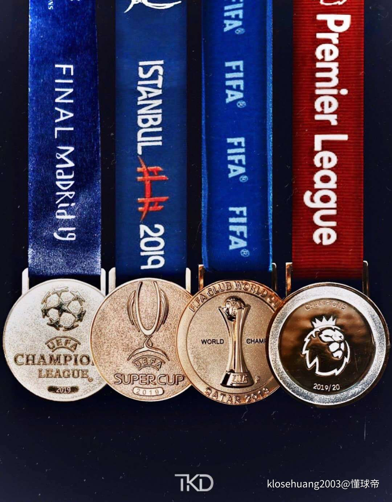

po一张自拍吧
| 时间 | 事件 |
|---|---|
| 2002年5月20日 | 出生在西安 |
| 2008年至2014年 | 在西影路小学上小学。期间学习了书法 |
| 2014年至2017年 | 在西安铁一中分校上初中 |
| 2017年至2020年 | 在西安市铁一中学上高中。期间参加化学竞赛学习，并参加了2019年北京大学化学学科营 |
| 2020年起 | 就读于北京大学药学院 |
最大的爱好：赵寻知
其他爱好
最早在一部足球小说中了解到这个球队，小说的主角加盟了这支球队，我被这支球队中的一名球员——Steven George Gerrard——的忠诚、坚韧和精神力量打动，于是开始关注这支没落的豪门。后来在现任主教练Jurgen Klopp入主球队之后，我对球队的未来也有了更充足的信心。现如今，球队已经在2019年夺得Europe Champions League的冠军，并在2020年、时隔30年之后重新夺回England Premier League的冠军！
我从6、7岁起开始练习书法，期间学习了唐代颜真卿的《勤礼碑》、汉代摩崖石刻《石门颂》，以及东晋王羲之的《兰亭序》。一手好字无疑是我的一张名片，也给我带来了给家里写春联、考试当中取得一定印象分这样的种种好处。
作为一个并不好动的男生，我从小比较喜欢读书。小学之前对恐龙很感兴趣，读了很多与之相关的书籍，并且在小时候读了许多百科全书。后来喜欢上了沈石溪的动物小说。之后逐渐开始对文学类书籍有所涉猎。此外还很喜欢历史，对中国历史方面的很多书籍都有过或深或浅的阅读。